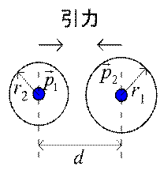
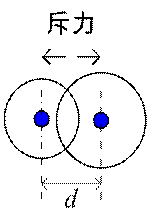
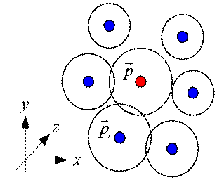
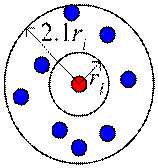
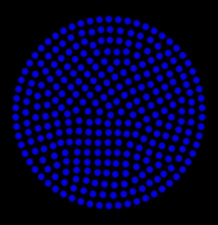

・要素の変形
節点の配置
解析の精度を上げるためには、できるだけ節点を滑らかに配置する必要がある。
また、メッシュ作成もスムーズに行うことができる。ここでは、次のような方法で節点を配置してみる。
 
上図の様に直交座標上に2つの節点があるとする。それぞれ位置ベクトルは, 、半径をr1,r2
とする。この時、2つの節点に働く力は次式となる。
ここで、wは重み関数であり、この式は重み関数と方向ベクトルの積を表している。
ここで、図1では斥力、図2では引力が節点間に働いている。これは、次式の重み関数で表される。
W<1の場合は、斥力、w > 1の場合は引力が働く。
次に下図の様に周囲に複数の節点がある場合を考える。

この場合は、節点に働く力は次式となる。
従って、タイムステップごとの節点の方向ベクトルは次式とした。
ここで、cは緩和係数である。
節点の追加・削除
滑らかな節点を配置するためには、節点を追加・削除する必要がある。

上図の様に節点ごとに周囲の節点の粗密を考える。
ここで、節点の数密度をn(ri)である。
2次元の場合、節点の追加・削除の条件は次式とした。
節点削除：
節点追加：
節点半径の補正
節点の半径は、次式の様に距離の加重平均で補正した。
ここで、wは重み関数で次式とした。
補正はタイムステップごとに行った。
結果
2次元の場合、下図の様な結果になった。


